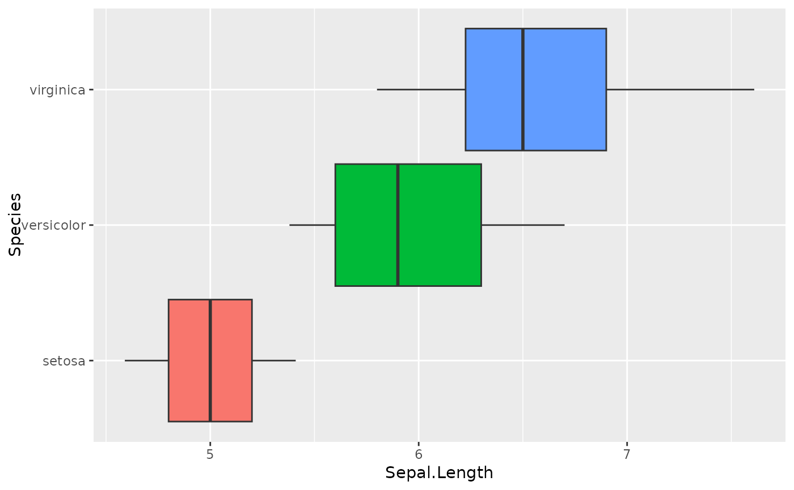
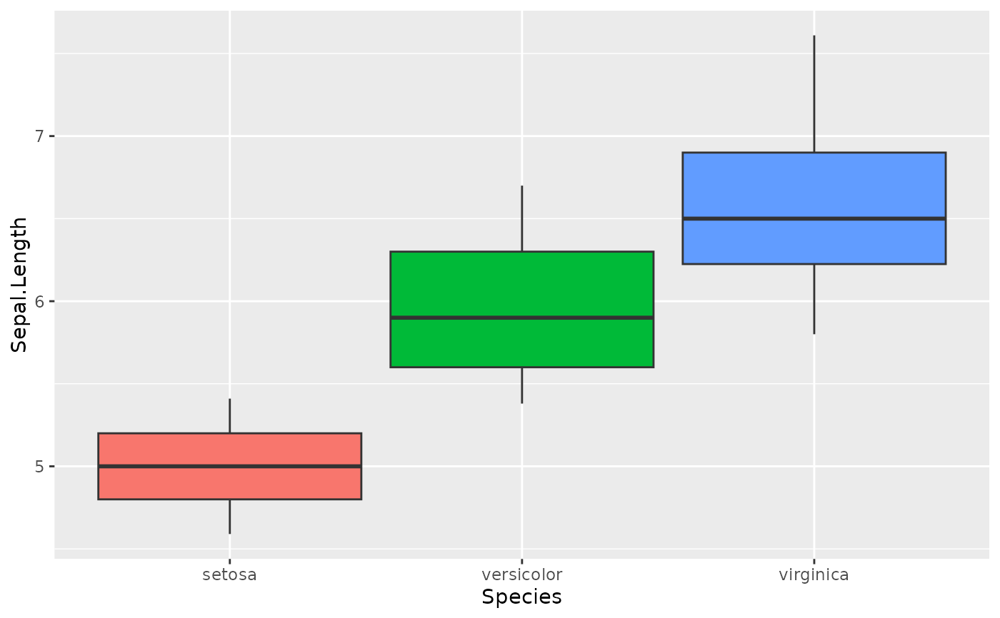
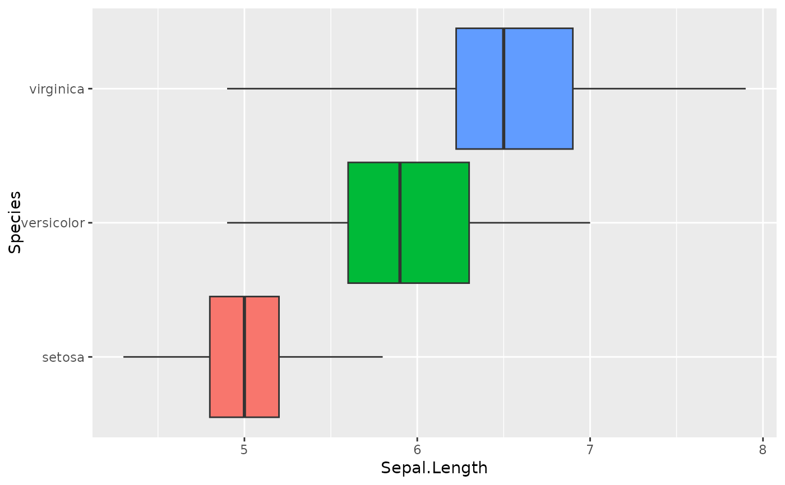

Box plot but whiskers show quantiles instead of outliers
qbox.RdBox plot but whiskers show quantiles instead of outliers
Examples
qbox(iris, Sepal.Length, Species)

qbox(iris, Sepal.Length, Species, orientation='vertical')

qbox(iris, Sepal.Length, Species, c(0, 0.25, 0.5, 0.75, 1))
